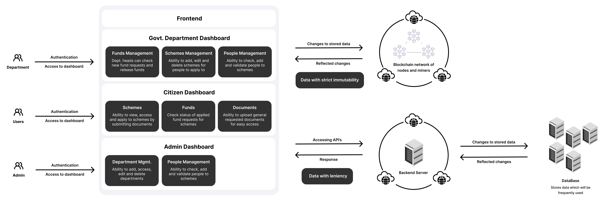
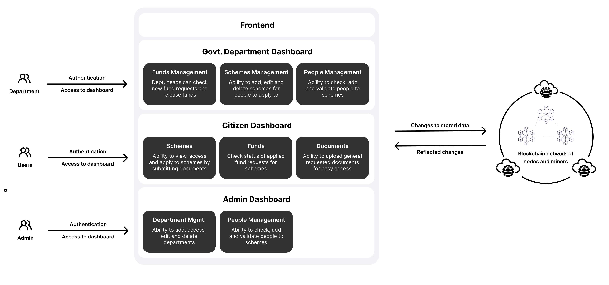

State Government Fund Allocation and Tracking System over Blockhain
A Brief Overview
The equitable allocation of state government funds is foundational to meeting the diverse needs of a community. Resource Allocation Central underscores the importance of this process.
Effective Distribution ensures immediate attention to crucial sectors such as healthcare, education, and infrastructure. This prioritization is key to addressing societal objectives and fostering economic growth.
Resource Allocation Central employs a centralized system to enhance the precision of financial deployment. This system is the bedrock of transparency and accountability, streamlining the allocation to spur inclusive growth and bridge socio-economic divides.
A robust fund allocation leads to uplifted communities and balanced economic development. Resource Allocation Central is committed to optimizing resource use and solidifying public fiscal management through its centralized approach.
Objectives:
- Establish a permanent document storage system to eliminate the need for repetitive uploads and reduce system overhead.
- Introduce a multi-application feature allowing users to apply for various grants and schemes with a single submission.
- Implement a real-time application tracking system to keep users informed about the status and progress of their applications.
- Transition to a digital application process to reduce reliance on physical documentation, speeding up applications for schemes.
Motivation:
- Foster a centralized allocation system for state government funds, improving decision-making, consistency, and resource utilization.
- Enhance accountability and oversight, allowing for efficient coordination and rapid response to emergencies.
- Address the public's call for greater accountability and transparency in government program operation and grant disbursement.
- Use blockchain technology to cut through bureaucratic red tape, facilitating a more efficient, accessible document management system.
- Introduce a mobile application for users to engage actively with the governance process and monitor the progression of adopted policies.
Modules Description
The system is ingeniously partitioned into three integral modules, each tailored to orchestrate specific functionalities within the ecosystem:
- The Client Module: As the front-facing component of the system, it provides the interactive web interface through which users cast votes. It is engineered for a seamless and intuitive user experience, ensuring that interactions are straightforward and secure.
- The Server-Side Application Module: This is the system's operational core, handling all the business logic. It serves as an intermediary, processing requests from the client module and executing transactions. This module ensures that operations conform to the rules defined in the smart contracts and maintains the system state.
- The Blockchain Layer Module: Comprising two distinct yet complementary components, this layer upholds the system's integrity. The blockchain component permanently records transactions to ensure security and trust in the voting process. Concurrently, the database component allows for efficient data management and rapid access to frequently needed information.
Technology Highlights
The backbone of our system is fortified with carefully selected technologies, each chosen for its proven reliability and synergy with the modules:
- Blockchain Technology: Serving as the immutable ledger, it validates and secures every vote, harnessing the Ethereum platform for smart contract deployment.
- Smart Contracts: These are the rulebooks within the blockchain, dictating the logic for vote tallying and validation, ensuring each step is transparent and tamper-proof.
- Backend Technologies: Node.js is employed to create a robust server-side framework that interacts with the blockchain and manages the application logic.
- Database Management: A combination of databases like MongoDB for data persistence and Redis for caching ensures swift data retrieval and storage efficiency.
- Frontend Framework: The client module may utilize frameworks like React or Angular to deliver a responsive and dynamic user interface, facilitating a streamlined voting process.
Architecture Diagram


Screenshots
Simple Layout For Easy Access